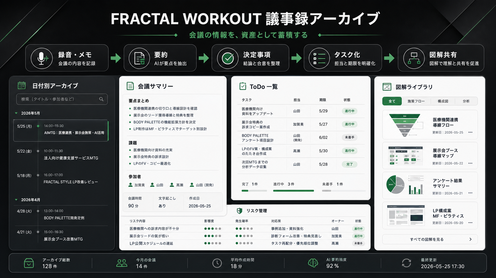

FRACTAL WORKOUT 議事録アーカイブ 図解5案
image-gen2で生成。図解内にロゴは入れず、既存の黒×グレー基調に別アクセント色を加えた比較案です。
案1 ティールアクセント
黒 / グレー / ティール
案2 ブルーアクセント
黒 / スレート / ブルー

案3 エメラルドアクセント
黒 / グラファイト / エメラルド
案4 コーラルアクセント
黒 / シルバー / コーラル
案5 アンバー×ティール
黒 / シルバー / アンバー / ティール